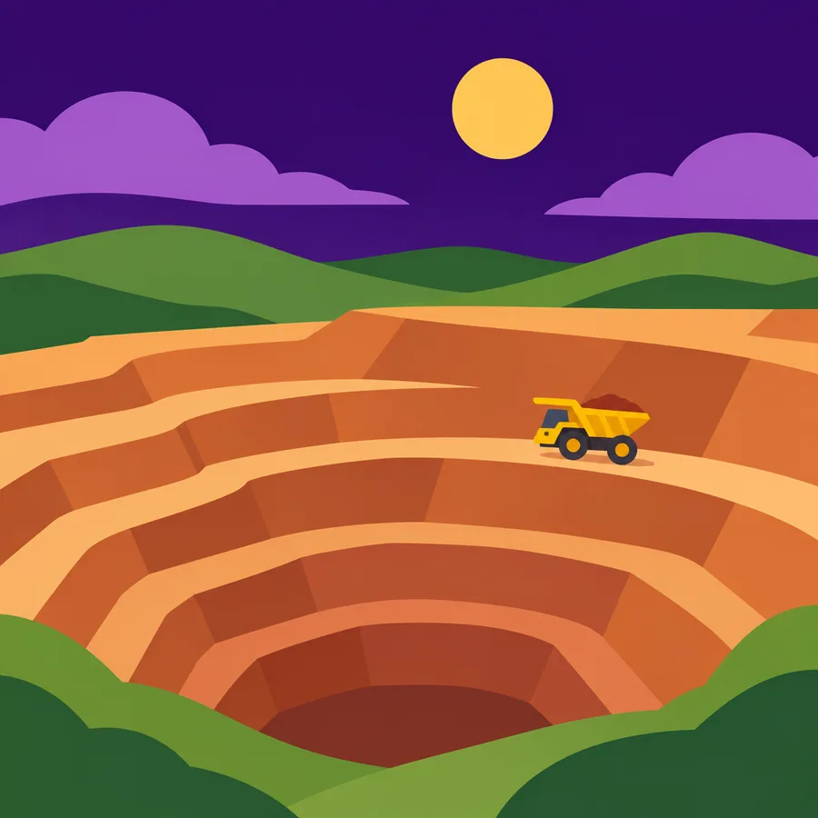
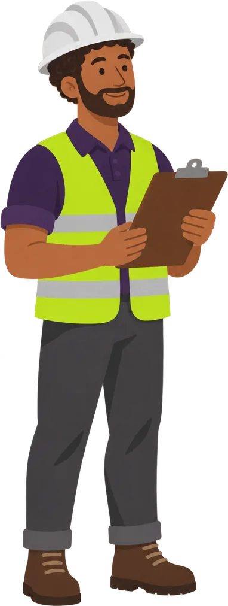

Direitos Humanos: Fundamentos e Diligência · Pílula 4
Trabalho forçado na cadeia de fornecedores
Um caso para reconhecer sinais e agir com responsabilidade.

Direitos Humanos: Fundamentos e Diligência · Pílula 4
Um caso para reconhecer sinais e agir com responsabilidade.

Marcos é fiscal de contratos em uma unidade de mineração. Ao longo desta pílula, você vê o que ele viu, decide o que fazer e descobre o que a lei e a devida diligência dizem sobre isso.

Assista ao caso. No momento da decisão, o vídeo para e você escolhe o que Marcos deve fazer. Cada escolha mostra uma consequência.
Prévia do formato. No projeto, esta cena é produzida em animação 2D, com locução profissional, trilha e legendas.
Volte ao alojamento com Marcos. Alguns detalhes mostram que algo está errado.
0 de 6
Um sinal isolado já merece atenção. Vários juntos pedem ação imediata.
No Brasil, reduzir alguém a condição análoga à de escravo é crime (Código Penal, art. 149). A lei descreve quatro formas de praticar esse crime.
Definição de trabalho forçado: Convenção 29 da OIT (1930), art. 2º.
Marcos vai acionar o canal de denúncia. Um bom relato descreve o que foi visto e ouvido, onde e quando, sem suposições nem julgamentos, e protege quem falou com ele.
Pelos Princípios Orientadores da ONU sobre Empresas e Direitos Humanos, as empresas devem identificar, prevenir e responder a riscos aos direitos humanos em suas operações e em sua cadeia. É a chamada devida diligência.
Responda às questões e envie. Você vê o gabarito comentado logo em seguida.